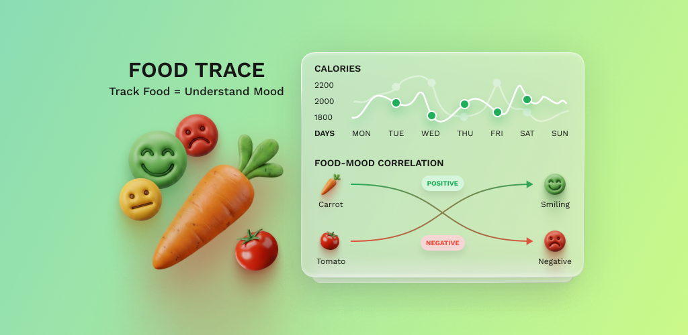
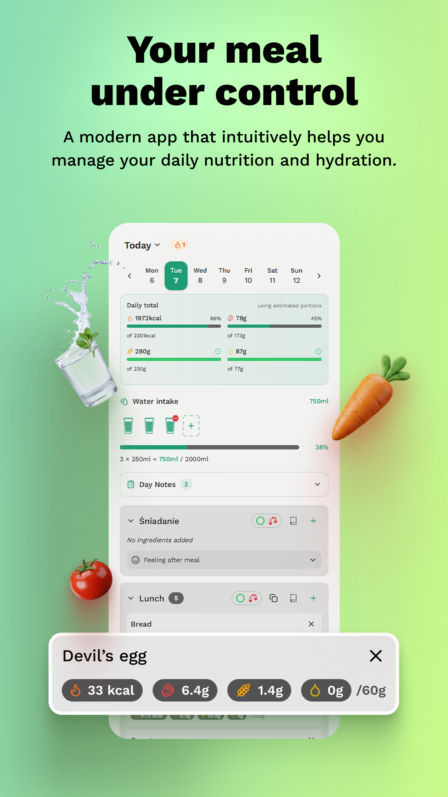
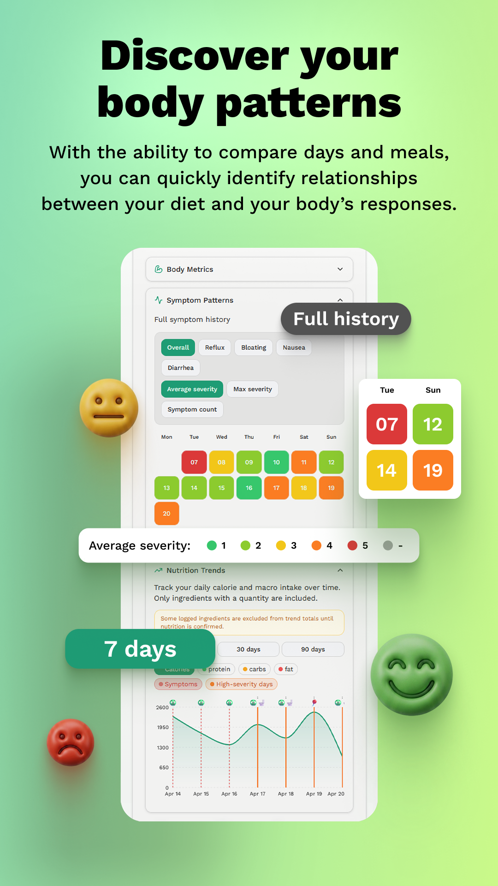
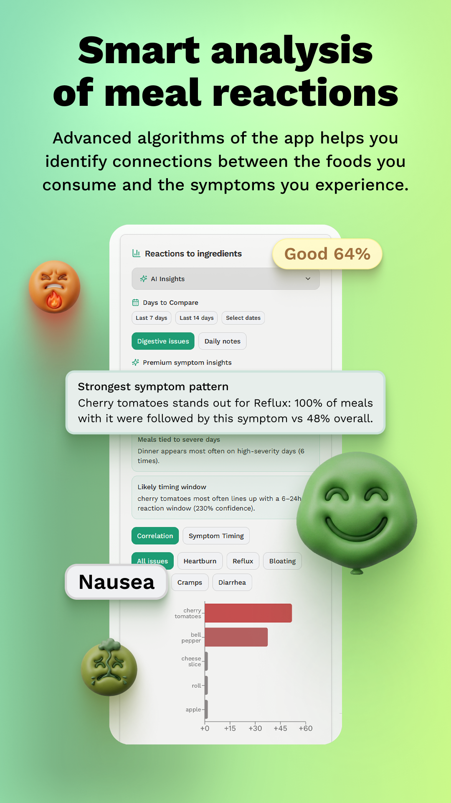

Food & meal logging
Add ingredients by meal, reuse common foods, save meal templates, and scan packaged products with barcode lookup.
FoodTrace helps you log food, symptoms, macros, water, and daily context so patterns become easier to spot. Built offline-first, private by default, and ready for the moments when your body leaves clues.

Larger previews show how FoodTrace moves from quick logging to nutrition context and symptom review.



Fast daily logging, honest nutrition data, and symptom context in one place - without turning your health notes into a spreadsheet.
Add ingredients by meal, reuse common foods, save meal templates, and scan packaged products with barcode lookup.
USDA-based nutrition for typed foods and frozen per-100g snapshots for scanned products, with visible AI estimate warnings when fallback estimates are used.
Track heartburn, reflux, bloating, nausea, cramps, diarrhea, intensity, stool type, stress, sleep, mood, and hydration.
Review macro trends, symptom overlays, heatmaps, meal comparisons, and streaks so repeated patterns are easier to see.
Follow elimination, reintroduction, and stabilization phases for low-FODMAP, gluten, dairy, or your own protocol.
Use FoodTrace fully offline, sign in for optional free cloud sync, or export local backups and CSV files when you need them.
Premium adds more depth: ingredient-symptom correlations, photo meal logging, unlimited meal templates, clinical PDF export, and AI focus summaries.
Clear policies for a personal food and symptom diary. These pages explain how FoodTrace works, what it is not, and how to contact us.
How app data, sync, purchases, analytics, and providers are handled.
Usage rules, limitations, subscriptions, and medical disclaimers.
Steps for deleting your account and understanding data removal.
Questions about FoodTrace, privacy, or account requests.
FoodTrace is for personal tracking and reflection. It does not provide medical advice, diagnosis, or treatment. If a symptom worries you, talk to a qualified healthcare professional.